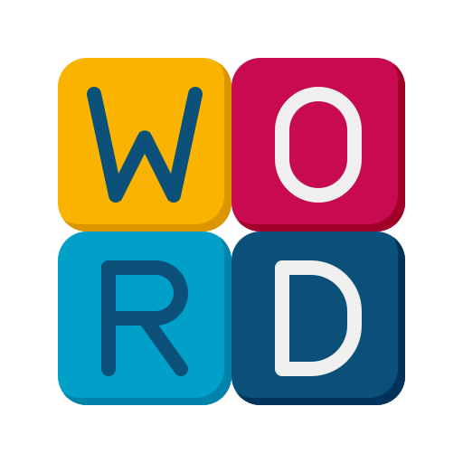
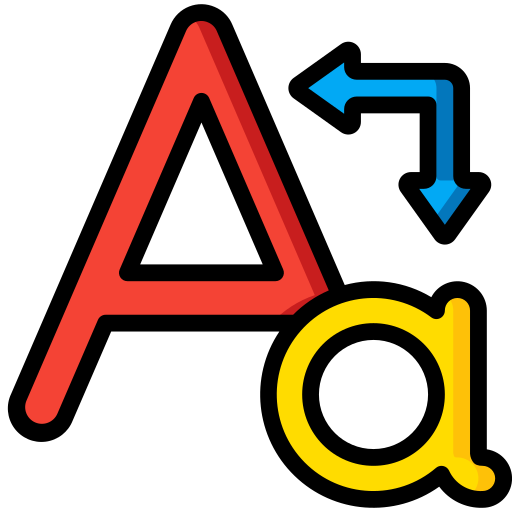

서비스 소개
영어 학습에 도움을 줄 수 있는 다양한 도구를 AI 기반으로 만들었습니다.
아래 카드(Quick Links)에서 원하는 도구를 선택하여 이용해보세요.
Quick Links

영어 단어 어원봇
입력한 단어의 어원을 알려주는 서비스

독해 문항 생성봇
영어 지문을 입력하면 수능 유형의 문항 생성
액티비티 생성봇
영어 지문을 익히기 위한 다양한 액티비티 생성

문법 예제봇
원하는 문법 요소에 대한 문항 생성